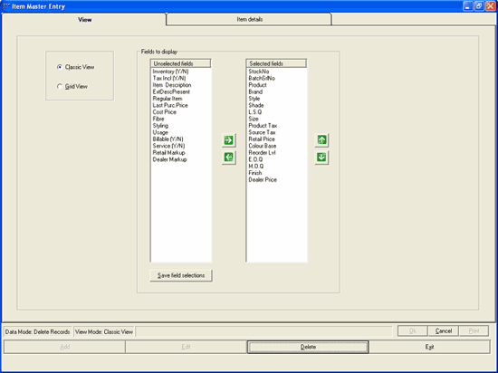
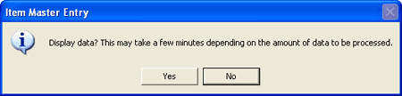
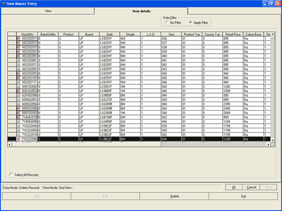

The Item Master Entry window is as shown.

Select the data display format as Classic View or Grid View. If you have selected Classic View, individual item details will be displayed. In Grid View you can view details of multiple items at a time.
Fields to display: Select the fields to be displayed for verifying item details.
Unselected fields: Displays the fields that are not selected for data verification.
Selected fields: Displays the fields that are currently selected for data verification. This list is based on the values selected during installation or on the settings you have chosen on this window and saved earlier.
In Unselected
fields click to select the fields you want to add for data verification.
Multiple selections are possible. Click  to move the selected
fields to the Selected fields
list. You can use
to move the selected
fields to the Selected fields
list. You can use  to remove the field names from the Selected fields list. You can rearrange
the order of the fields in the Selected
fields list using
to remove the field names from the Selected fields list. You can rearrange
the order of the fields in the Selected
fields list using  and
and  .
.
Save field selections: Click to save the selections you made. If you do not save the selections, the fields list will be available only for the current session. Even if you save these selections, they can be changed in subsequent sessions, if required.
Click Item details to display the tab. Alternatively, press Alt+3. A message is displayed as shown.

The Item details tab is as shown, if you have selected Grid View.
Note: Click here
to view a sample of this tab, if you have selected the Classic
View. Use  and
and  to view the previous
and next records respectively.
to view the previous
and next records respectively.

Data Filter: The default selection is No Filter. If you select Apply Filter, the Selector window is displayed. Click here to know more about how to apply filter.
The item records that can be deleted are displayed in the grid. A check box in grey colour is displayed at the left of all records. Select the records to be deleted by clicking the check box.
Select All Records: Check this if you want to mark all records for deletion.
{kind=link}